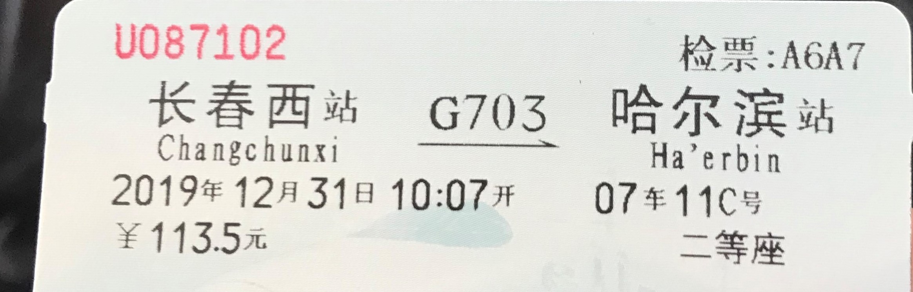
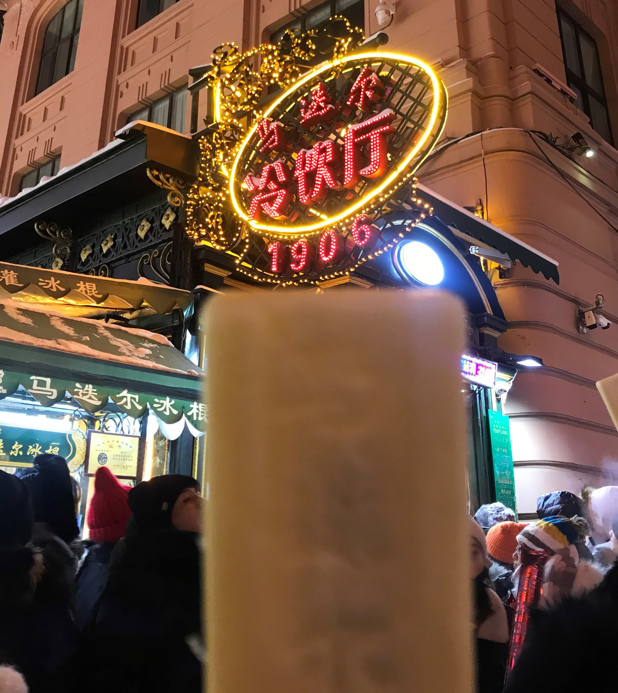
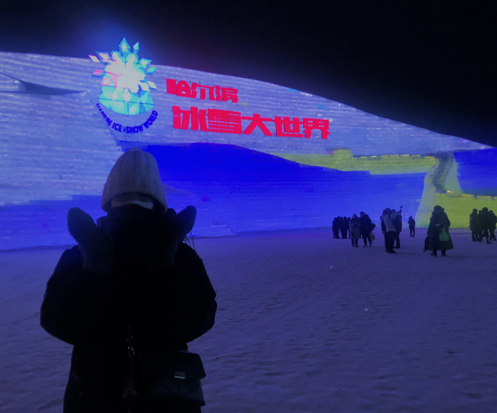
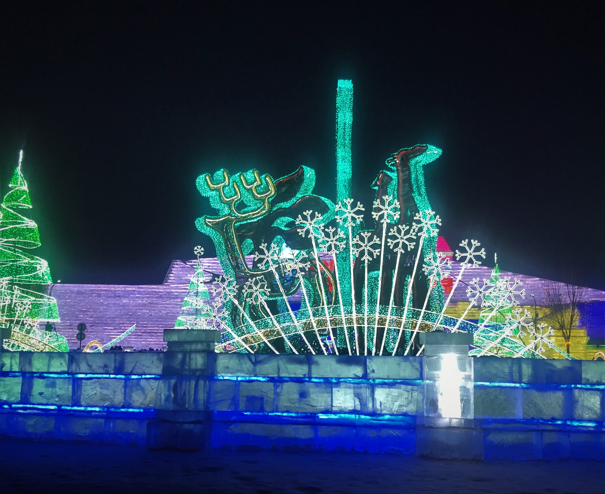
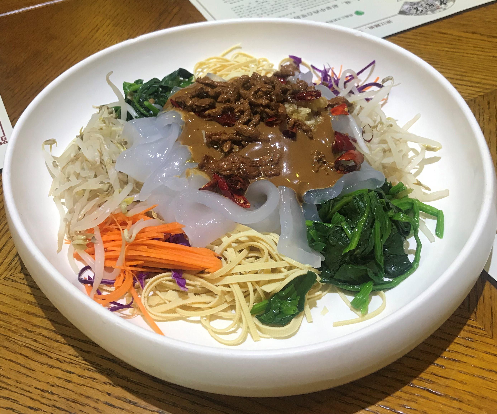
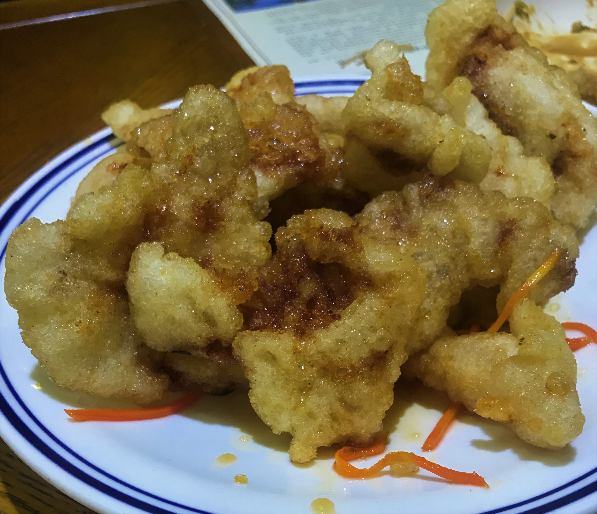
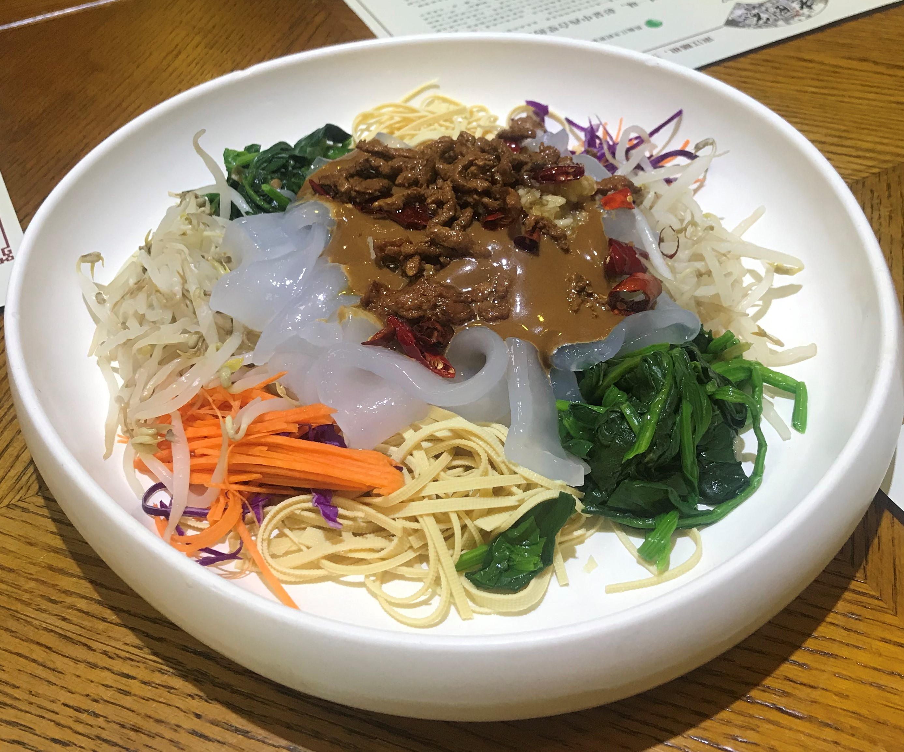
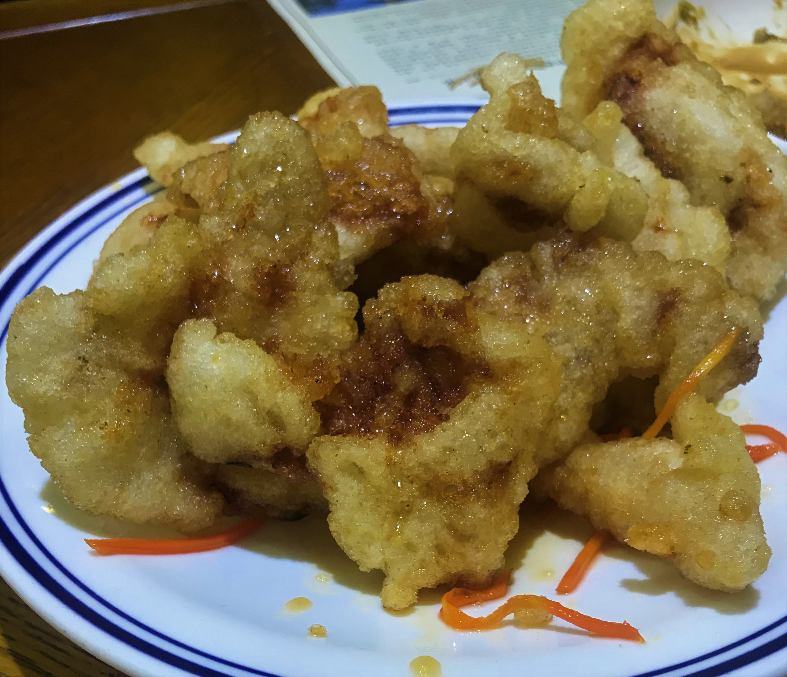

おすすめ理由
複数の条件で検索しても必ずと言っていいほど旅行ツアーが見つかるためです！
今回はハルビン旅行を紹介
大晦日と元旦に友人と行きました！とても寒く気温はなんとマイナス30度越え！！
- 12月31日
- 早朝に寮を出て出発→駅に到着
- この時、気温はマイナス15度
- 私は中国に留学していたので、日本からではなく中国の長春から行きました。 
- ハルビンに到着後お昼ご飯♪
- ロシア料理(ハルビンはロシアに近いので)本場の味を知ることができました！
- ハルビンの有名なアイス！！
- イッテQでイモトアヤコさんが紹介されてました。寒くて歯に沁みました。
- 色んな味がありましたが、私はシンプルなものを食べました。甘くておいしかったです。 
- おいしい夜ごはん♪
- 名前は忘れました(笑) ハルビンではかなり有名で人気なお店だったので2時間ほど待ちました。
- とてもおいしかったです！！！！
- いよいよハルビンの雪まつりへ！！
- 年越しイベントは通常営業より遅く始まるので夜までマックで寒さを凌ぎました。
- この時マイナス30度を超えていました泣 眉毛や髪の毛が凍りました(笑)  
- 1月1日
- ハルビンの聖ソフィア教会
- 改修工事中だったため入場できませんでした泣 この日は列車で帰路に就く予定だったため1つの場所しか行けませんでした。

 




こんな感じでハルビン旅行は終了しました！！他にも沢山の場所に行ったので追々挙げていけたらと思います。
閲覧ありがとうございました＾＾